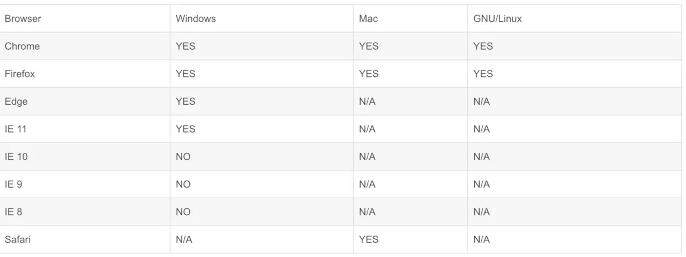

最近因业务需求在项目中嵌入了tinymce这个富文本编辑器，用于满足平台给用户编辑各类新闻内容什么的业务需求，前后也花了不少时间体验和对比了市面上各类开源编辑器。
*案例demo版本：vue-tinymce-demo
在线预览：vue-tinymce-demo.netlify.com/#/
各大WYSIWYG编辑器的简单比较
1、UEditor
因为已经不再维护了，需要大量修改源码，很多都是专门为jsp等服务器渲染项目写的代码需要删除， 然后越删越害怕越删越不敢用，依赖jquery，需要专门用js去parse编辑完成的内容，parse完的内容还可能污染全局css，兼容老浏览器还不错， 但是，我们不怎么考虑兼容IE。所以，告辞。
2、wangEditor
中文文档，上手快，依赖jquery，功能少点要花时间去写插件，需要单独为图片上传功能写个接口，老项目忙着上线临时用过，感觉并不适合当前业务这么重的编辑功能于是放弃了。
3、Quill
api友好, 功能少，需要特定的css去解析文本（这点我不大喜欢），ui好看，适合作为论坛回帖功能使用。
4、CKEditor
CKEditor目前主流的还是4.x的版本，但是文档看着很瞎眼实在是提不起兴致去配置，草草用了下就放弃了，5.x版本刚从beta结束，需要指定专门的node以及npm版本，虽然功能强大配置灵活ui漂亮不过目前糟糕的兼容性基本是不可能出现在大众视野了。
5、KingEditor
丑，不喜欢，不爱用
6、Draft-js
知乎最近刚改的文本编辑器就是在draft的基础上开发的，依赖react， 弃。
7、Medium-editor：
虽然看着感觉很酷炫，但是，不适合我们的业务场景啊， api也简陋可怕。
8、trix：
嗯，又一个小而美，放弃
9、Slate
react，放弃
10、Bootstrap-wysiwyg：
bootstrap, jquery, 放弃
11、vue-quill-editor
轻量级，工具条配置少，IE10+ 根据quillJs封装。
扩展使用：www.jianshu.com/p/dc2492160…
12、tinymce
文档好，功能强，bug少，无外部依赖，大家用了都说好，嗯，没错就是它了。
编辑器配置方面只要能看得懂英文耍起来还是比较简单的，适配中碰到的大部分问题都可以通过看文档解决，即便看文档解决不了网上也有大量的文章能告诉你怎么配置能解决。
当然了，主要是我这里需要解决一些别人觉得超简单自己一想都很烦人的需求，比如：
- word文档粘贴进来要带格式
- 兼容移动端
- word文档粘贴进来要正常显示并且还要兼容移动端
- 电脑网页里粘贴进来内容要正常显示并且排版还不能乱
- 电脑网页拷过来的内容还要兼容到移动端
高级使用方式
你可能还想要通过一些更高级的方式来使用tinyMCE。
比如npm: npm install tinymce
bower: bowerinstall tinymce 或者
bower install tinymce-src=git://github.com/tinymce/tinymce
composer: php composer.phar require"tinymce/tinymce" ">= 4"
nuget: Install-PackageTinyMCE
sdk: 你可以在这里下载：www.tinymce.com/download/
jQuery: 如果你希望得到一个jQuery插件形式的tinyMCE，你可以在这里定制：www.tinymce.com/download/cu…。你可以根据你的意愿，定制你需要的功能。这样，你可以得到一个尽可能小的适用的tinyMCE。
1、插件
tinyMCE有很多插件可以使用，比如代码编辑模式、高亮模式，图片上传等等。插件拓展或新增了tinyMCE的功能。或者，你也可以自定义一些插件。
关于插件的内容过多，不进行翻译，后续一些插件也以挂出官网的链接形式展示。
2、自主义UI
1、主题和皮肤
你可以定制主题和皮肤，通过threm和spin来配置它们。
2、尺寸
这些配置帮助你定制尺寸，width、height、min_width、max_width、min_height、max_height。
你可能还需要自适应尺寸（www.tinymce.com/docs/plugin…）的插件来帮助你使尺寸更智能。或者，你可以使用resize配置。
3、样式
content_css 可用帮助你定制主体区域的样式。
statusbar 设为false可以隐藏状态栏。
4、源码模式
www.tinymce.com/docs/get-st…。页尾。
5、上传图片
https://www.tinymce.com/docs/get-started/upload-images/
6、拼写检查
7、内容过滤
https://www.tinymce.com/docs/get-started/filter-content/
兼容性
移动端：
PC端：

初始化
因为tinymce的Plugins是按需加载的
为了能先快速上手这个编辑器
就先在vue-cli的index.html中默认塞入一条在线cdn地址
<script src="https://cdn.bootcss.com/tinymce/4.7.4/tinymce.min.js"></script>复制代码记得去下载语言包到本地,
然后就在文件内引入
import './zh_CN.js'复制代码后面有机会再写下单独打包的事项，毕竟这货体积还不小。
插入vue组件模板
<template> <div> <textarea :id= "Id"></textarea> </div> </template>复制代码记得一定要在textarea外面包一层div，不然...你自己试试看就知道了。
组件基础配置
将tinymce通过指定的selector挂载到组件中
<template> <div> <textarea :id= "Id"></textarea> </div> </template> <script> import './zh_CN.js' export default { data () { const Id = Date.now() return { Id: Id, Editor: null, DefaultConfig: {} } }, props: { value: { default: '', type: String }, config: { type: Object, default: () => { return { theme: 'modern', height: 300 } } } }, mounted () { this.init() }, beforeDestroy () { // 销毁tinymce this.$emit('on-destroy') window.tinymce.remove(`#${this.Id}`) }, methods: { init () { const self = this this.Editor = window.tinymce.init({ // 默认配置 ...this.DefaultConfig, // prop内传入的的config ...this.config, // 挂载的DOM对象 selector: `#${this.Id}`, setup: (editor) => { // 抛出 'on-ready' 事件钩子 editor.on( 'init', () => { self.loading = false self.$emit('on-ready') editor.setContent(self.value) } ) // 抛出 'input' 事件钩子，同步value数据 editor.on( 'input change undo redo', () => { self.$emit('input', editor.getContent()) } ) } }) } } } </script>复制代码好了，组件基本的初始化完成，后面正式开始踩坑之旅
API
具体内容看官网的API就行，英语不好的用chrome翻译下对照着demo也能看个七七八八，当然主要原因还是我比较懒。
我这边根据自身业务需求在组件的data内写了个默认配置
DefaultConfig: { // GLOBAL height: 500, theme: 'modern', menubar: false, toolbar: `styleselect | fontselect | formatselect | fontsizeselect | forecolor backcolor | bold italic underline strikethrough | image media | table | alignleft aligncenter alignright alignjustify | outdent indent | numlist bullist | preview removeformat hr | paste code link | undo redo | fullscreen `, plugins: ` paste importcss image code table advlist fullscreen link media lists textcolor colorpicker hr preview `, // CONFIG forced_root_block: 'p', force_p_newlines: true, importcss_append: true, // CONFIG: ContentStyle 这块很重要， 在最后呈现的页面也要写入这个基本样式保证前后一致， `table`和`img`的问题基本就靠这个来填坑了 content_style: ` * { padding:0; margin:0; } html, body { height:100%; } img { max-width:100%; display:block;height:auto; } a { text-decoration: none; } iframe { width: 100%; } p { line-height:1.6; margin: 0px; } table { word-wrap:break-word; word-break:break-all; max-width:100%; border:none; border-color:#999; } .mce-object-iframe { width:100%; box-sizing:border-box; margin:0; padding:0; } ul,ol { list-style-position:inside; } `, insert_button_items: 'image link | inserttable', // CONFIG: Paste paste_retain_style_properties: 'all', paste_word_valid_elements: '*[*]', // word需要它 paste_data_images: true, // 粘贴的同时能把内容里的图片自动上传，非常强力的功能 paste_convert_word_fake_lists: false, // 插入word文档需要该属性 paste_webkit_styles: 'all', paste_merge_formats: true, nonbreaking_force_tab: false, paste_auto_cleanup_on_paste: false, // CONFIG: Font fontsize_formats: '10px 11px 12px 14px 16px 18px 20px 24px', // CONFIG: StyleSelect style_formats: [ { title: '首行缩进', block: 'p', styles: { 'text-indent': '2em' } }, { title: '行高', items: [ {title: '1', styles: { 'line-height': '1' }, inline: 'span'}, {title: '1.5', styles: { 'line-height': '1.5' }, inline: 'span'}, {title: '2', styles: { 'line-height': '2' }, inline: 'span'}, {title: '2.5', styles: { 'line-height': '2.5' }, inline: 'span'}, {title: '3', styles: { 'line-height': '3' }, inline: 'span'} ] } ], // FontSelect font_formats: ` 微软雅黑=微软雅黑; 宋体=宋体; 黑体=黑体; 仿宋=仿宋; 楷体=楷体; 隶书=隶书; 幼圆=幼圆; Andale Mono=andale mono,times; Arial=arial, helvetica, sans-serif; Arial Black=arial black, avant garde; Book Antiqua=book antiqua,palatino; Comic Sans MS=comic sans ms,sans-serif; Courier New=courier new,courier; Georgia=georgia,palatino; Helvetica=helvetica; Impact=impact,chicago; Symbol=symbol; Tahoma=tahoma,arial,helvetica,sans-serif; Terminal=terminal,monaco; Times New Roman=times new roman,times; Trebuchet MS=trebuchet ms,geneva; Verdana=verdana,geneva; Webdings=webdings; Wingdings=wingdings,zapf dingbats`, // Tab tabfocus_elements: ':prev,:next', object_resizing: true, // Image imagetools_toolbar: 'rotateleft rotateright | flipv fliph | editimage imageoptions' }复制代码因为本人比较懒，以上配置导出的代码可能会有代码注入的风险，建议保存的时候再前后端都做下注入过滤，不过一般数据安全问题主要还是服务器那边的事情?。
后面的图片上传可以单独拆出来做个小配置，直接写到props里好了。
url: { default: '', type: String }, accept: { default: 'image/jpeg, image/png', type: String }, maxSize: { default: 2097152, type: Number }, withCredentials: { default: false, type: Boolean }复制代码然后把这套东西塞到init配置里
// 图片上传 images_upload_handler: function (blobInfo, success, failure) { if (blobInfo.blob().size > self.maxSize) { failure('文件体积过大') } if (self.accept.indexOf(blobInfo.blob().type) >= 0) { uploadPic() } else { failure('图片格式错误') } function uploadPic () { const xhr = new XMLHttpRequest() const formData = new FormData() xhr.withCredentials = self.withCredentials xhr.open('POST', self.url) xhr.onload = function () { if (xhr.status !== 200) { // 抛出 'on-upload-fail' 钩子 self.$emit('on-upload-fail') failure('上传失败: ' + xhr.status) return } const json = JSON.parse(xhr.responseText) // 抛出 'on-upload-success' 钩子 self.$emit('on-upload-complete' , [ json, success, failure ]) } formData.append('file', blobInfo.blob()) xhr.send(formData) } }复制代码至此， 一个组件的封装基本算是完成了
看下初阶成果
<template> <div> <textarea :id= "Id"></textarea> </div> </template> <script> import './zh_CN.js' export default { data () { const Id = Date.now() return { Id: Id, Editor: null, DefaultConfig: { // GLOBAL height: 500, theme: 'modern', menubar: false, toolbar: `styleselect | fontselect | formatselect | fontsizeselect | forecolor backcolor | bold italic underline strikethrough | image media | table | alignleft aligncenter alignright alignjustify | outdent indent | numlist bullist | preview removeformat hr | paste code link | undo redo | fullscreen `, plugins: ` paste importcss image code table advlist fullscreen link media lists textcolor colorpicker hr preview `, // CONFIG forced_root_block: 'p', force_p_newlines: true, importcss_append: true, // CONFIG: ContentStyle 这块很重要， 在最后呈现的页面也要写入这个基本样式保证前后一致， `table`和`img`的问题基本就靠这个来填坑了 content_style: ` * { padding:0; margin:0; } html, body { height:100%; } img { max-width:100%; display:block;height:auto; } a { text-decoration: none; } iframe { width: 100%; } p { line-height:1.6; margin: 0px; } table { word-wrap:break-word; word-break:break-all; max-width:100%; border:none; border-color:#999; } .mce-object-iframe { width:100%; box-sizing:border-box; margin:0; padding:0; } ul,ol { list-style-position:inside; } `, insert_button_items: 'image link | inserttable', // CONFIG: Paste paste_retain_style_properties: 'all', paste_word_valid_elements: '*[*]', // word需要它 paste_data_images: true, // 粘贴的同时能把内容里的图片自动上传，非常强力的功能 paste_convert_word_fake_lists: false, // 插入word文档需要该属性 paste_webkit_styles: 'all', paste_merge_formats: true, nonbreaking_force_tab: false, paste_auto_cleanup_on_paste: false, // CONFIG: Font fontsize_formats: '10px 11px 12px 14px 16px 18px 20px 24px', // CONFIG: StyleSelect style_formats: [ { title: '首行缩进', block: 'p', styles: { 'text-indent': '2em' } }, { title: '行高', items: [ {title: '1', styles: { 'line-height': '1' }, inline: 'span'}, {title: '1.5', styles: { 'line-height': '1.5' }, inline: 'span'}, {title: '2', styles: { 'line-height': '2' }, inline: 'span'}, {title: '2.5', styles: { 'line-height': '2.5' }, inline: 'span'}, {title: '3', styles: { 'line-height': '3' }, inline: 'span'} ] } ], // FontSelect font_formats: ` 微软雅黑=微软雅黑; 宋体=宋体; 黑体=黑体; 仿宋=仿宋; 楷体=楷体; 隶书=隶书; 幼圆=幼圆; Andale Mono=andale mono,times; Arial=arial, helvetica, sans-serif; Arial Black=arial black, avant garde; Book Antiqua=book antiqua,palatino; Comic Sans MS=comic sans ms,sans-serif; Courier New=courier new,courier; Georgia=georgia,palatino; Helvetica=helvetica; Impact=impact,chicago; Symbol=symbol; Tahoma=tahoma,arial,helvetica,sans-serif; Terminal=terminal,monaco; Times New Roman=times new roman,times; Trebuchet MS=trebuchet ms,geneva; Verdana=verdana,geneva; Webdings=webdings; Wingdings=wingdings,zapf dingbats`, // Tab tabfocus_elements: ':prev,:next', object_resizing: true, // Image imagetools_toolbar: 'rotateleft rotateright | flipv fliph | editimage imageoptions' } } }, props: { value: { default: '', type: String }, config: { type: Object, default: () => { return { theme: 'modern', height: 300 } } }, url: { default: '', type: String }, accept: { default: 'image/jpeg, image/png', type: String }, maxSize: { default: 2097152, type: Number }, withCredentials: { default: false, type: Boolean } }, mounted () { this.init() }, beforeDestroy () { // 销毁tinymce this.$emit('on-destroy') window.tinymce.remove(`$#{this.Id}`) }, methods: { init () { const self = this this.Editor = window.tinymce.init({ // 默认配置 ...this.DefaultConfig, // 图片上传 images_upload_handler: function (blobInfo, success, failure) { if (blobInfo.blob().size > self.maxSize) { failure('文件体积过大') } if (self.accept.indexOf(blobInfo.blob().type) >= 0) { uploadPic() } else { failure('图片格式错误') } function uploadPic () { const xhr = new XMLHttpRequest() const formData = new FormData() xhr.withCredentials = self.withCredentials xhr.open('POST', self.url) xhr.onload = function () { if (xhr.status !== 200) { // 抛出 'on-upload-fail' 钩子 self.$emit('on-upload-fail') failure('上传失败: ' + xhr.status) return } const json = JSON.parse(xhr.responseText) // 抛出 'on-upload-complete' 钩子 self.$emit('on-upload-complete' , [ json, success, failure ]) } formData.append('file', blobInfo.blob()) xhr.send(formData) } }, // prop内传入的的config ...this.config, // 挂载的DOM对象 selector: `#${this.Id}`, setup: (editor) => { // 抛出 'on-ready' 事件钩子 editor.on( 'init', () => { self.loading = false self.$emit('on-ready') editor.setContent(self.value) } ) // 抛出 'input' 事件钩子，同步value数据 editor.on( 'input change undo redo', () => { self.$emit('input', editor.getContent()) } ) } }) } } } </script>复制代码直接引入组件调用就行了
<template> <mce-editor :config = "Config" v-model = "Value" :url = "Url" :max-size = "MaxSize" :accept = "Accept" :with-credentials = false @on-ready = "onEditorReady" @on-destroy = "onEditorDestroy" @on-upload-success= "onEditorUploadComplete" @on-upload-fail = "onEditorUploadFail" ></mce-editor> </template>复制代码但是作为一名优秀的程序员，这怎么可能够嘛。
下面说下打包的事情
塞入webpack
为了加快页面载入速度就要首先解决载入文件过多的问题，而大部分时间用户并不需要每次打开页面都先加载一遍editor的核心文件，而editor本身也要按需加载内容，一开始想把每个plugin都搞成独立组件模块按需载入，但是这就要涉及到修改编辑器本身源码，或者说对window.tinymce删掉点特性，这些都太麻烦也都有风险，对后面的代码维护影响也大，索性就都先留着。
后面边做边改吧
还是以vue-cli为例
把官网下载的包塞到stataic文件夹中
然后删掉index.html模版中的cdn代码吧不需要了
当然这里有俩选择
要么做成一个异步组件，单独打包，按需载入
要么直接引入到main.js中将包打成为一个巨无霸
所以我选择前者，
首先老规矩 引入编辑器主体
import '../../static/tinymce/tinymce.min.js'复制代码然后刷新下页面，不出意外应该是报这么个错Uncaught SyntaxError: Unexpected token <
眼尖的朋友应该知道是怎么回事了theme.js:1
在默认配置下， tinymce载入的theme的路径居然是这个
Request URL:http://localhost:8080/themes/modern/theme.js
然后我跑去官网搜了下api 只搜到一个叫document_base_url的api，但是根据多年程序员的直觉经验告诉我 不是这货（嗯，我在这里卡住了），网上翻了下各地文献，都没有啊，
那怎么办呢
于是我就跑去看源码...但是4万行...算了...
然后我就在控台打印了下tinymce对象，然后发现了一个叫baseURL的string对象，嗯，有希望了。
在源码里搜了下baseURL
蹦出来这段代码 .... 算了有很多段...
大致思想就是通过当前URI拆出来个baseURL,改掉就行了
window.tinymce.baseURL = '/static/tinymce'复制代码如果需要载入的地址是另一个比如自己公司的cdn的路径，那改成全路径就行了
window.tinymce.baseURL = 'http://cdn.xxx.com/static/tinymce'复制代码貌似路径的问题解决了
但是新的问题又出现了，
插件下过来都是带min的，但默认载入的插件都是不带min的，一定是我源码没看仔细，
然后我又搜了一下代码
if (!baseURL && document.currentScript) { src = document.currentScript.src; if (src.indexOf('.min') != -1) { suffix = '.min'; } baseURL = src.substring(0, src.lastIndexOf('/')); }复制代码希望就在眼前，貌似是业务我载入的方式是直接导入到模块的，于是一个叫suffix的默认值为空了，于是我去又加了行代码：
window.tinymce.suffix = '.min'复制代码成功！
你看嘛，超级简单的是不是，根本不用改源码，网上说的动不动就去改源码什么的不要信啊不要信，大部分面向对象的事情改个默认值就行了。
对了,还记得前面的语言包嘛，
下过来塞到/static/tinymce/langs文件夹里
然后删掉
import './zh_CN.js'复制代码这行代码
在DefaultConfig中放入一个新配置项
language: 'zh_CN'复制代码好了，后面就是模块打包的事情了,
打包
前面打的包有一个问题是默认配置是载入tinyMce本体，那么就会造成这个包大概有500k的体积，如果这个组件不做异步载入的处理，那么对于某些业务来说就是灾难。虽然这么做打开只用载入一个文件，业务比较稳定。
但我觉得这样不优雅所以最后还是把它单独拎出来了。
同理，根据这个库本身的特性，我们完全可以把这么多个必须的plugin按需要直接统一打成一个包，直接载入。这样，我们就又多了一个几百k的plugins包。
然后把plugins包和tinyMce主体包在不阻塞页面加载的情况下，做个懒加载提前缓存好文件方便后面使用，而组件本身在挂载前做个监听window.tinymce全局变量的方法，然后cdn控制下文件的过期时间即可。